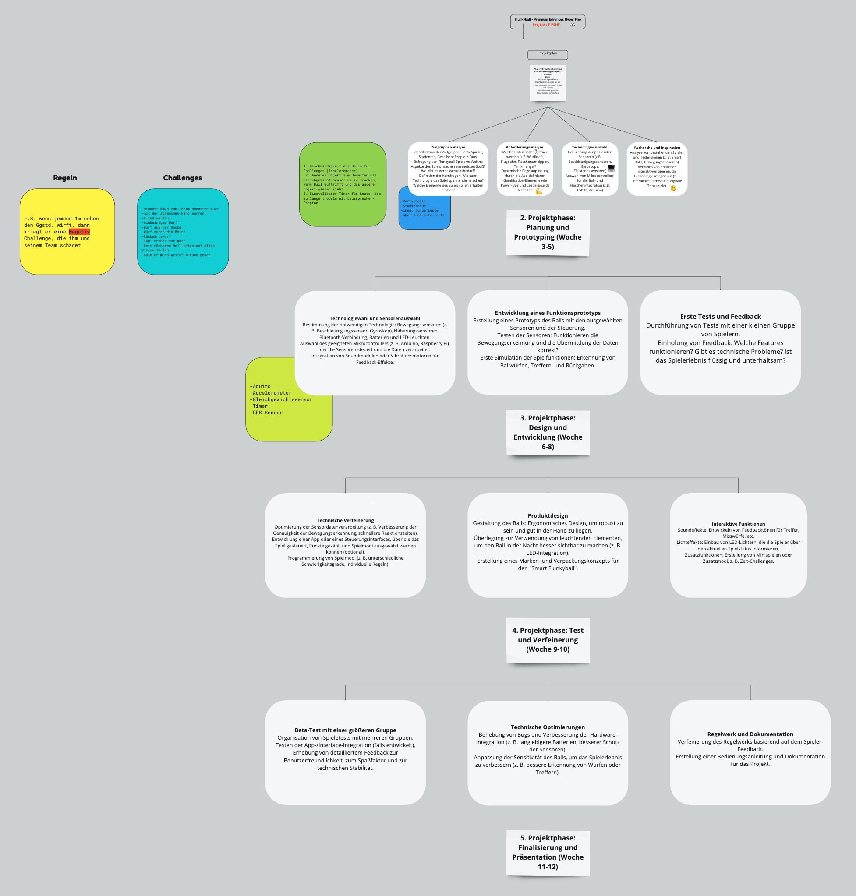
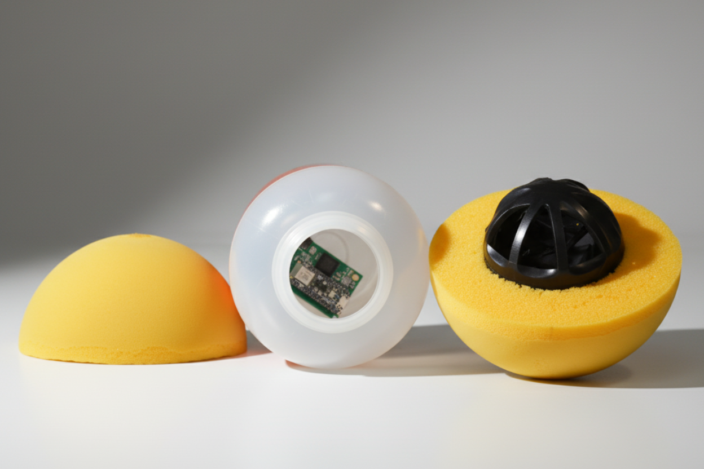
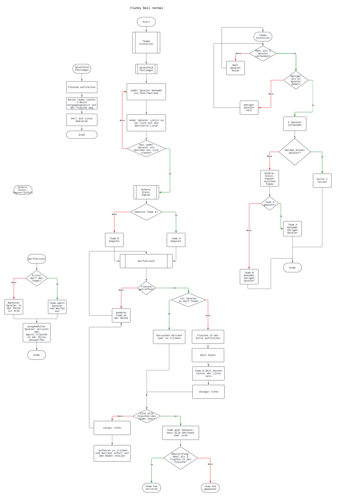
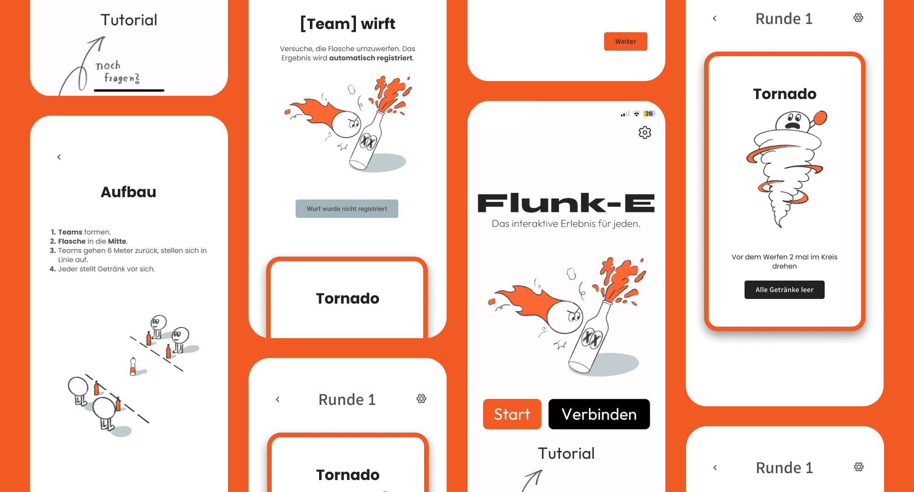

Flunk-E

"Wie macht man ein Partyspiel fair, ohne den Spaß zu verlieren?"
Flunkyball lebt von seiner Einfachheit, hat aber auch eine große Schwäche: Wer gut wirft, dominiert. Wer schlecht wirft, verliert.
Unsere Antwort: Ein intelligentes Spielsystem, das Sensoren, Bluetooth und Challenges kombiniert, um Balance zu schaffen ohne die soziale Essenz des Spiels zu verlieren.
Das Ergebnis: Ein smarter Ball, eine robuste Sensor-Flasche und eine App, die als digitaler Game Master das Spiel für alle spannend hält.
Ein Projekt im Dreierteam mit Joost Haschen und Nicklas Spiering.
Die Vision
Wie können Sensoren ein soziales Spiel besser machen, statt es zu ersetzen?
Der Kontext: Ein beliebtes Spiel mit einer Schwäche
Flunkyball funktioniert denkbar einfach: Ball werfen, Flasche treffen, trinken. Genau diese Einfachheit macht es zum Klassiker auf Festivals und Partys. Doch nach ein paar Runden zeigt sich immer dasselbe Muster: Die besten Werfer dominieren, die schlechteren schauen zu. Das Spiel wird einseitig – und damit weniger spannend für alle.
Wir fragten uns: Muss das so sein?
Die Idee: Dynamik durch Challenges
Statt das Grundprinzip zu verändern, wollten wir eine zusätzliche Ebene schaffen: Challenges.
Die Überlegung dahinter:
Gute Werfer bekommen schwierige Aufgaben (z.B. "Mit links werfen" oder "Augen zu")
Das Spiel bleibt physisch und sozial, wird aber fairer und unvorhersehbarer
Unser Gedanke: Technologie soll nicht das Spiel übernehmen, sondern im Hintergrund dafür sorgen, dass alle mehr Spaß haben.
Das Ziel: Ein System, das mitdenkt
Unser Ansatz war klar: Ein intelligentes Spielsystem, das:
- Automatisch erkennt, ob die Flasche getroffen wurde
- Lustige Challenges vergibt
- Physisch und digital verbindet, ohne dass die App im Weg steht

Von der ersten Idee bis zum zeitlichen Ablauf: Unser Miro Board zeigt unseren Prozess, inklusive verworfener Ideen wie GPS-Tracking oder Spracherkennung, die zu komplex oder unzuverlässig gewesen wären.
Von der Idee zum System
Konzeption & Design: Wie Hardware, Software und Spielmechanik zusammenwachsen
Das Spielprinzip neu gedacht
Die grundlegende Herausforderung war: Wie schaffen wir Balance, ohne das Spiel zu verkomplizieren?
Unsere Lösung basiert auf drei Säulen:
1. Automatische Treffererkennung
Hilft der App, einen Überblick zu behalten, wer dran ist und somit (k)eine Challenge erhält.
2. Challenge-Vergabe
Das Treffer-Team bekommt Challenges, dadurch hat das andere Team einen Vorteil.
3. Soziale Interaktion bleibt analog
Die Technologie läuft im Hintergrund. Kein ständiges Starren aufs Handy – nur kurze Interaktionen mit der App, wenn eine neue Challenge ansteht.
Die Kernidee: Das System ist intelligent, aber unsichtbar. Es fühlt sich an wie normales Flunkyball, nur fairer und spaßiger.
Die Systemarchitektur: Drei Komponenten, ein Erlebnis
Ball + Flasche + App = nahtlose Verbindung

Das technische Herzstück ist relativ simpel:
Der smarte Ball
- Accelerometer erkennt Wurfbewegung und Impact
- BLE-Modul sendet Signal an die App
Die Sensor-Flasche
- Beschleunigungssensor registriert, wenn sie umfällt
- Extra widerstandsfähige Flasche für unzählige Würfe ausgelegt
Die App als Game Master
- Empfängt Sensordaten via BLE
- Verwaltet Spielstand und Challenge-Vergabe
- Zeigt aktuelle Challenge an

Eine der Herausforderungen dabei: Alle drei Komponenten mussten zuverlässig in Echtzeit kommunizieren – auch, wenn der Ball mal etwas weiter fliegt.
Die digitale Schnittstelle: der unsichtbarer Spielleiter
Design-Prinzipien für die App
Bei der Gestaltung der App ging es nicht primär um schönes Aussehen, sondern um Klarheit unter Partybedingungen:
1. Schnell verständliche Information
- Möglichst barrierefreies, aber energetisches Design
- Aktuelle Challenge schnell auffindbar
- Spielstand auf einen Blick
2. Minimale Interaktion
- Keine komplexen Menüs während des Spiels
- Wenige Taps für die wichtigsten Aktionen
- Automatische Übergänge zwischen Spielphasen
3. Visuelles Feedback
- Animationen bestätigen Treffer
- Je nach Team verschieden-farbige Challenges

App-Walkthrough
Challenge-Design: KI als kreativer Sparringspartner
Eine der spannendsten Konzeptfragen: Welche Challenges machen das Spiel fairer, ohne zu frustrieren?
Unser Prozess:
1. Brainstorming mit KI
Wir nutzten KI, um eine breite Palette an Challenge-Ideen zu generieren – von simpel ("Mit links werfen") bis absurd ("Rückwärts werfen mit geschlossenen Augen").
Wir testen verschiedene KI's, beispielsweise ChatGPT und Deepseek. Dabei stellten wir fest, dass diese oft ihre eigenen Stärken haben.
2. Realitätscheck
Welche Challenges sind auch praktisch umsetzbar? Welche machen tatsächlich Spaß? Welche sind zu frustrierend?
Die Outputs der KI waren teilweise mit Vorsicht zu genießen und benötigten menschliche Kuratierung. Indem wir u.a. Beispiele gaben, konnten wir die KI in die richtige Richtung lotsen.
Learnings & Ausblick
Hardware ist anders als erwartet
Vor Flunk-E habe ich nur mit digitalen Projekten gearbeitet. Die Kombination aus Arduino, Bluetooth und App hat mir gezeigt, wie viel komplexer es wird, wenn physische Komponenten im Spiel sind. Dinge, die in der App funktionieren, scheitern plötzlich an Bluetooth-Reichweite oder Sensor-Ungenauigkeiten. Das hat meinen Blick auf Design verändert: Man muss sich früh mit den technischen Möglichkeiten auseinandersetzen. Auch hierbei hat KI uns sehr geholfen. Es war sehr gut dafür, uns einen Überblick in geeignete Hardware zu geben, bei der wir vorher völlig ahnungslos waren.
Design für bestimmte Kontexte
Eine App, die draußen bei Lärm und Ablenkung funktionieren muss, braucht andere Lösungen. Große Schrift, wenig Interaktion, klares Feedback - das waren meine Überlegungen beim UI-Design.
Teamwork unter Zeitdruck
Wir haben die Aufgaben effizient aufgeteilt und uns regelmäßig abgestimmt. Was geholfen hat: Klare Verantwortlichkeiten mit Deadlines sowie regelmäßiges Feedback von Dozierenden und Kommilitonen.
Galerie